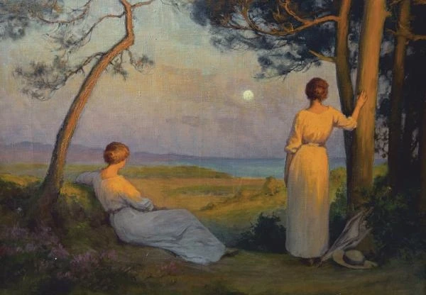

5 February 2024
this is where i belong

dear you,
i don’t see them as often as i used to. i am greeted with comfort, with arms wrapped around my sides. there is a constant air of laughter in the corner of our smiles when we are in one another’s company. we discuss unhappiness and rub eachother’s backs with a hand of familiarity. i know your pain, i know your bleeding. i know how it feels to read the lines of my palm with nothing but uncertainty.
we sleep in one room and our breaths fall into a rhythm. there is a sense of divinity, or maybe fate – that has brought us together, to this room. only being in the same place at one moment of time, a time that now feels like forever ago, has led us to a year of being knitted together like gloves. we are connected through our affinity to read, to create, to love. there is an understanding of how we each want to live and how we want our lives to be, what we want them to look like. no judgement ever crosses a mind in that room, only questions. where are you going to go? what do you want to be? how can we help you get there?
as we grow older and leave the place that brought us together, i passionately await to see where the lines of their palms will take them. to watch eachother’s lives through pictures will become a form of worship: i am waiting to see what you become. i love you.
yours, kate
(artwork: girls on the moor moonlight by marcel rieder)